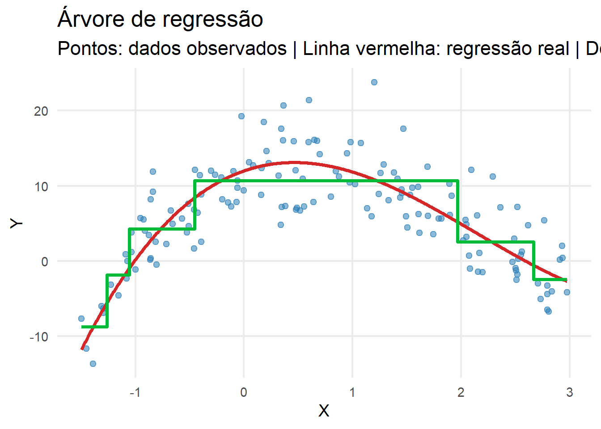

Parte I : Aprendizado Supervisionado
Árvores: Regressão e Classificação
Árvores de regressão
Uma estratégia diferente
Uma árvore divide o espaço de entrada em regiões:
\[ \mathcal X=\mathcal R_1\cup\cdots\cup\mathcal R_M \]
e atribui uma predição a cada região.
O modelo
\[ \boxed{ \widehat g(\mathbf x)= \sum_{m=1}^{M}c_mI(\mathbf x\in\mathcal R_m) } \]
A função estimada é constante por partes.
Qual a melhor constante em uma região?
Fixada \(\mathcal R_m\):
\[ \widehat c_m= \arg\min_c \sum_{i:\mathbf x_i\in\mathcal R_m}(y_i-c)^2 \]
A solução é:
\[ \boxed{ \widehat c_m= \frac{1}{N_m}\sum_{i:\mathbf x_i\in\mathcal R_m}y_i } \]
ou seja, a média das respostas na região.
Função objetivo
Para uma árvore \(T\) com \(M\) folhas:
\[ \boxed{ RSS(T)= \sum_{m=1}^{M} \sum_{i:\mathbf x_i\in\mathcal R_m} (y_i-\widehat c_m)^2 } \]
Boas regiões são internamente homogêneas em relação a \(Y\).
Como encontrar a partição?
Buscar globalmente todas as partições é inviável.
Usamos uma estratégia gulosa:
\[ \boxed{\text{recursive binary splitting}} \]
Em cada etapa escolhemos a melhor divisão disponível.
Uma divisão candidata
Para variável \(X_j\) e ponto de corte \(s\):
\[ \mathcal R_1(j,s)=\{\mathbf x:x_j\le s\}, \qquad \mathcal R_2(j,s)=\{\mathbf x:x_j>s\} \]
O melhor split
Escolhemos \((j,s)\) que minimiza:
\[ \boxed{ \sum_{i:\mathbf x_i\in\mathcal R_1(j,s)} (y_i-\widehat c_1)^2+ \sum_{i:\mathbf x_i\in\mathcal R_2(j,s)} (y_i-\widehat c_2)^2 } \]
Depois repetimos dentro das regiões resultantes.
Construção completa
- Começar com todas as observações.
- Procurar o melhor \((j,s)\).
- Dividir o nó.
- Repetir recursivamente.
- Interromper segundo um critério de parada.
Cada split reduz o RSS de treinamento.
Interações aparecem naturalmente
Se uma divisão em \(X_2\) ocorre apenas no ramo definido por \(X_1\le s_1\), o efeito de \(X_2\) depende da região definida por \(X_1\).
\[ \boxed{\text{Árvores capturam interações sem especificá-las previamente}} \]
Seleção de variáveis é implícita
A cada nó, apenas uma variável é escolhida.
Variáveis que não ajudam a reduzir o erro podem nunca aparecer.
Assim, árvores combinam:
\[ \text{não linearidade} + \text{interações} + \text{seleção implícita} \]
Complexidade
Por que não continuar dividindo?
Como cada split reduz o RSS:
\[ \text{profundidade}\uparrow \Rightarrow RSS_{treino}\downarrow \]
Mas árvores muito profundas tendem a adaptar-se às particularidades da amostra.
\[ \boxed{\text{árvore profunda}\Rightarrow\text{alta variância}} \]
Instabilidade
Pequenas alterações na amostra podem mudar:
- o primeiro split;
- as divisões subsequentes;
- a estrutura inteira da árvore.
Essa instabilidade é uma manifestação da variância do estimador.
Regularização da árvore
Podemos controlar a complexidade por profundidade, tamanho mínimo dos nós e poda.
A ideia estatística central é:
\[ \boxed{\text{ajuste}+\text{penalização pela complexidade}} \]
Cost-complexity pruning
\[ \boxed{ R_\alpha(T)=RSS(T)+\alpha|T| } \]
onde \(|T|\) é o número de folhas.
\[ \alpha\uparrow\Rightarrow\text{árvores menores} \]
Tuning novamente
\(\alpha\) deve ser escolhido por validação:
\[ \widehat\alpha= \arg\min_\alpha\widehat R_{CV}(T_\alpha) \]
A lógica introduzida no início da disciplina reaparece aqui.
Interpretação da árvore de regressão
A linha tracejada representa a função verdadeira que gerou os dados.
A curva em degraus representa a árvore ajustada, que aproxima a função de regressão por regiões nas quais a predição é constante.
Isso evidencia que árvores de regressão constroem estimadores do tipo piecewise constante.
Um estimador do tipo piecewise constante (ou constante por partes) é um método estatístico e de machine learning que divide o espaço dos dados em várias regiões distintas e assume um valor fixo (constante) para cada uma delas.
Vantagens × limitações
| Vantagens | Limitações |
|---|---|
| regras interpretáveis | função em degraus |
| não linearidade | alta variância |
| interações automáticas | instabilidade |
| seleção implícita | árvore única pode predizer pior que ensembles |
Árvores de classificação
O mecanismo permanece
Uma árvore continua:
- dividindo recursivamente o espaço das covariáveis
- criando regiões
- produzindo uma predição em cada região
O que muda é o critério usado para avaliar as divisões e a predição terminal
Regressão versus classificação
Árvore de regressão
Em cada folha:
\[ \widehat y = \text{média das respostas} \]
Divisões procuram reduzir o erro quadrático
Árvore de classificação
Em cada folha:
\[ \widehat P(Y=k) = \text{proporção da classe }k \]
A classe pode ser escolhida pela maior probabilidade estimada
Por que precisamos de outra medida?
Considere uma região \(R_m\) e defina
\[ \widehat p_{mk} = \frac{1}{N_m} \sum_{\mathbf x_i\in R_m} I(y_i=k) \]
Queremos medir quão misturadas estão as classes dentro dessa região
Índice de Gini
\[ \boxed{ G_m = \sum_{k=1}^{K} \widehat p_{mk} (1-\widehat p_{mk}) } \]
Equivalentemente,
\[ G_m = 1- \sum_{k=1}^{K} \widehat p_{mk}^2 \]
Entropia
Outra medida é
\[ \boxed{ H_m = - \sum_{k=1}^{K} \widehat p_{mk} \log(\widehat p_{mk}) } \]
Uma folha pura apresenta impureza mínima
Exemplo binário
Se em uma folha
\[ \widehat p_1=0.5 \qquad \widehat p_0=0.5 \]
há grande mistura entre as classes
Se
\[ \widehat p_1=1 \qquad \widehat p_0=0 \]
a folha é pura
Escolhendo uma divisão
Uma divisão produz duas regiões filhas
Escolhemos divisões que reduzam a impureza ponderada
\[ \boxed{ \Delta I = I(R) - \left[ \frac{N_L}{N}I(R_L) + \frac{N_R}{N}I(R_R) \right] } \]
Quanto maior \(\Delta I\), melhor a separação produzida pelo split
O que continua igual?
- crescimento recursivo
- profundidade
- tamanho mínimo dos nós
- poda
- overfitting
- seleção por validação
Portanto, não precisamos reconstruir toda a teoria de árvores